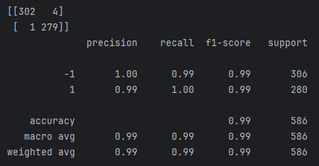

Background
The Semiconductor Manufacturing (SECOM) dataset is a well-known public dataset provided by UC Irvine within the university's Machine Learning Repository. The dataset comes from a modern manufacturing process for 1,567 wafers and includes 591 sensor/process measurement readings collected during the process. The goal of this project was to build a model that could predict whether a wafer would pass or fail based on downstream sensor readings as early as possible.
The Core Challenges: Messy Data and Class Imbalance
The dataset is structured so that each row corresponds to an individual wafer and every column corresponds to a different sensor reading (1,567 rows, 590 columns, 1 column for pass/fail). The dataset pairs wafers with pass/fail labels which is nice, but it is very messy. There are hundreds of noisy sensor signals and over 40,000 missing values across the set. On one hand, this makes working with the data tricky from a cleaning/preprocessing perspective. However, the dataset simultaneously becomes a useful and realistic proxy for what equipment and process engineers deal with on a regular basis within fabs.
On top of the mess, there is an issue with pass/fail class imbalance. Of the 1,567 wafers, 1,463 are labeled as pass and 104 are labeled as fail. In other words, the data is heavily skewed with passing wafers, accounting for 93% of the total wafers and outnumbering fails by a ratio of 14 pass to 1 fail. This is a desirable outcome for a fab (no one wants bad wafers), but it becomes an issue for building a reliable prediction model as a model can technically guess "pass" every time and still be 93% accurate using the SECOM data.
Thus leaves two problems to fix: clean up the mess, and balance out the data. Challenge accepted >:)
Approach
The first step was to clean the dataset. This was a bit straightforward as columns that were more than 50% empty could be dropped (more than half empty = irrelevant), and any remaining missing values were replaced by that column's median value. Filling gaps with median values does affect variance calculations since the same value is repeatedly inserted, but it's a quick and easy way to complete columns while preserving the data's distribution as opposed to using mean values which are sensitive to outliers.
Once the data was cleaned, the class imbalance issue was addressed using SMOTE: Synthetic Minority Oversampling Technique. SMOTE generates new artificial data points in a dataset for the underrepresented class, which are "fail" wafers in this case. Instead of simply duplicating "fail" rows, SMOTE looks at an existing failure data point, finds other failures that are similar to it, and generates a synthetic point somewhere in between them. This makes new points blend characteristics of real failures while leveling out the pass/fail ratio.
A random forest classifier was then trained using 80% of the clean rebalanced data, reserving 586 wafers to be used for testing model performance. The scikit-learn Python library was used to create useful matrices to breakdown accuracy and precision statistics.
Results
The end result is a model that takes raw fab sensor data and returns a pass/fail risk prediction, allowing for early at-risk detection rather than catching failures only at the final test. From the 586 unseen wafers, the model correctly predicted 302 wafers to pass and 279 to fail. There were 4 wafers that were predicted to fail but actually passed, and only 1 wafer was predicted to pass but actually failed. The model ultimately has a 99% accuracy rate on wafer predictions.
In the context of a real fab, the 4 wafers that were predicted to fail but actually passed would result in a bit of wasted time checking wafers that were fine to begin with. The more important consideration is the 1 wafer that was predicted to pass but actually failed final testing, as this would potentially allow a bad wafer to continue downstream. However, 1 bad wafer out of 280 is 0.4%, which is a very favorable percentage and shows the accuracy and robustness of the predictor model. These results highlight how machine learning models can be used within modern fabs to reduce failure rates and ensure passing wafers make it past final testing.

Tools & Techniques
- Language: Python
- Libraries: scikit-learn, imbalanced-learn, pandas
- Modeling: Random forest classifier
- Imbalance handling: SMOTE